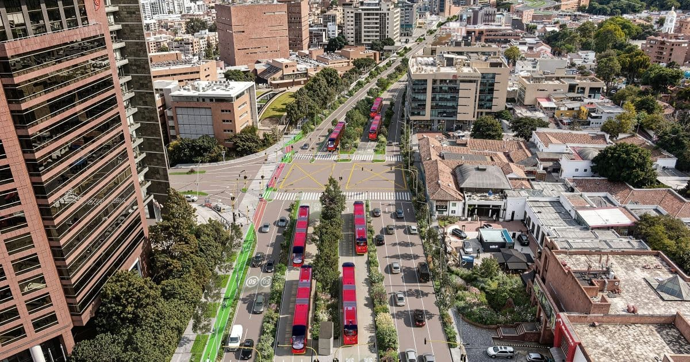

A Colômbia é um país localizado no norte da América do Sul, conhecido por sua rica diversidade cultural, paisagens, impressionantes e história marcada por transformações significativas. Entre montanhas imponentes, praias deslumbrantes e cidades cheias de vida, o país combina tradições indígenas, africanas e europeias, criando uma identidade única. Além de sua beleza natural, a Colômbia se destaca por sua música, gastronomia e hospitalidade, tornando-se um destino fascinante para quem deseja conhecer não apenas suas paisagens, mas também sua história e cultura.
A Colômbia é uma das nações mais megadiversas do planeta, abrigando cerca de 10% de toda a biodiversidade mundial em seu território. O país detém o primeiro lugar global em número de espécies de aves, orquídeas e borboletas, além de ser o segundo em plantas, anfíbios e peixes de água doce.Essa concentração de vida é impulsionada pela sua localização na intersecção entre a Cordilheira dos Andes, a Floresta Amazônica e os oceanos Pacífico e Atlântico, criando mais de 314 tipos de ecossistemas únicos.

Carrera Séptima A rua mais famosa e mais importante da Colombia, localizada em boagatá,começando em San Isidro e tendo o termino em San Isidro. Tendo aproximadamente 26 km de comprimento. Se destacando como uma artéria histórica de pedestres, cultura e comércio
O esporte nacional da Colômbia que utiliza pólvora é o Tejo (ou Turmequé). É uma modalidade de arremesso onde os jogadores lançam discos de metal pesados (de até 3 kg) contra um alvo de argila que contém pequenos pacotes triangulares de pólvora, que explodem com o impacto. O jogo foi inventado pelas comunidades indígenas que habitavam a região da Colômbia há mais de 500 anos
É o único país da América do Sul com costas tanto para o Mar do Caribe quanto para o Oceano Pacífico

A legislação colômbiana (Artigo 50 da Lei 1480) exige que sites comerciais exibam claramente dados como razão social, NIT (Número de Identificação Tributária) da DIAN, endereço físico e canal de atendimento direto
A Colômbia possui a quarta maior economia da América Latina, com um PIB em torno de US$ 350 bilhões. O país tem registrado taxas de crescimento recentes na faixa de 2% a 3% ao ano, apoiado por uma economia diversificada que inclui uma forte base de recursos naturais, agricultura e serviços
É rica em recursos como petróleo, carvão mineral, gás natural e ouro. O setor de combustíveis fósseis representa uma das principais pautas de exportação
A Colômbia é um dos maiores exportadores mundiais de café e destaca-se no mercado internacional de flores de corte
Os setores de comércio, administração pública, saúde, educação e serviços financeiros têm ganhado peso na composição do Produto Interno Bruto (PIB)
A economia enfrenta discussões internas sobre inflação e o controle do déficit nas contas públicas, além de desafios comerciais externos, especialmente relacionados às relações com os Estados Unidos